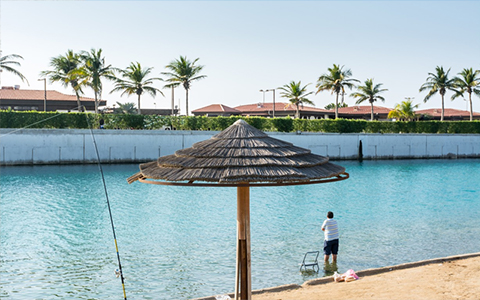
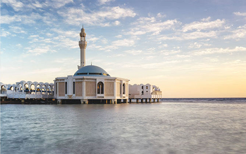

Cidde Şehri
Cidde, Kızıldeniz'in doğu kıyısının ortasında yer alan ve Kızıldeniz'in Gelini olarak bilinen ve
ülkenin ekonomik ve turizm başkenti olarak kabul edilen bir Suudi şehridir. Nüfusunun yaklaşık 3.4
milyon olduğu tahmin ediliyor ve Riyad'dan sonra ikinci büyük şehir.
Cidde şehrinin kuruluşu, balıkçı gruplarının balık avlama gezilerinden sonra buraya yerleştiği
yaklaşık 3000 yıl öncesine dayanmaktadır. Bundan sonra 2500 yıl önce Quda'ah kabilesi Cidde'ye gelip
yerleşmiş ve Cidde tarafından tanınmıştır. Cidde'nin tarihsel dönüşümü, MS 647'de üçüncü Müslüman
Halife Osman Bin Affan'ın (Allah Ondan razı olsun) şehrin deniz yoluyla gelen hacıları (Hacılar)
karşılamak için bir limana dönüştürülmesini emrettiği dönemde olmuştur. Mekke'de Kutsal Hac. Bugüne
kadar, Cidde hem deniz hem de hava hacılarının yanı sıra karayoluyla seyahat edenler için ana
geçittir.
Cidde, 20. yüzyılın son yirmi yılında büyüyerek şehri Suudi Arabistan Krallığı'nda bir para ve
ticaret merkezi ve petrolle ilgili olmayan malların ihracatı ile iç ihtiyaçların ithalatı için büyük
ve önemli bir liman haline getirdi.
Cidde hakkında
Cidde hakkında Cidde hakkında Cidde (Cidde olarak da bilinir), Kızıldeniz kıyısında bulunan bir Suudi Arabistan şehridir ve batı Suudi Arabistan'ın en büyük kentsel merkezidir. Mekke Eyaletinin en büyük şehri, Kızıldeniz'deki en büyük deniz limanı ve Suudi Arabistan'ın başkent Riyad'dan sonra ikinci büyük şehridir. Şehrin nüfusu şu anda 3.4 milyonun üzerinde. Suudi Arabistan'da önemli bir ticaret merkezidir. Cidde, sağlıklı Müslümanların hayatlarında en az bir kez ziyaret etmeleri gereken İslam'ın en kutsal şehri olan Mekke'ye açılan ana kapıdır. Aynı zamanda İslam'ın ikinci en kutsal yeri olan Medine'ye açılan bir kapıdır. Cidde, tüm Suudi Arabistan şehirlerinin en kozmopolit ve hoşgörülü olup, dünyanın her yerinden Cidde'yi evleri yapan gurbetçilere ev sahipliği yapmaktadır. Ekonomik olarak Cidde, Suudi Arabistan ve Orta Doğu'daki bilimsel ve mühendislik liderliğine sermaye yatırımını daha da geliştirmeye odaklanıyor.[2] Cidde, 2009 yılında İnovasyon Şehirleri Endeksi'nde inovasyon açısından Afrika / Orta Doğu bölgesinde bağımsız olarak 4. sırada yer aldı.
İklim
Diğer Suudi Arabistan şehirlerinden farklı olarak Cidde, kışın gece yarısı 15 °C (59 °F) ile öğleden sonra 25 °C (77 °F) arasında değişebilen ılık sıcaklığını koruyor. Yaz sıcaklıkları çok sıcaktır, genellikle öğleden sonra 40 °C (104 °F) sınırını geçer ve akşamları 30 °C'ye (86 °F) düşer. Cidde'deki yağışlar genellikle seyrektir ve genellikle Aralık ayında küçük miktarlarda görülür. Ayrıca birkaç önemli dolu olayı yaşandı. Kış aylarında şiddetli gök gürültülü fırtınalar yaygındır. Aralık 2008'deki fırtına, son hafızanın en büyüğüydü ve yağmur yaklaşık 7,6 cm'ye ulaştı. Cidde'de şimdiye kadar kaydedilen en düşük sıcaklık 1995 kışında 3 °C (37 °F) idi.
ekonomi
Suudi Arabistan Havayolları'nın genel merkezi, Cidde'yi Orta Doğu'nun Dubai'den sonra ikinci ticaret merkezi olarak tanımlayan, tüm başkentlerine iki saatlik uçuş mesafesindeki Orta Doğu ve Kuzey Afrika'nın kapsadığı bölgenin kalbinde yer alıyor. Ayrıca Cidde'nin sanayi bölgesi, Riyad, Jubail ve Yanbu'dan sonra Suudi Arabistan'ın dördüncü büyük sanayi şehridir.
Kral Abdullah Caddesi
Kral Abdullah Caddesi, şirketlerin ofisleri ve ticari gelişmeler için önemli bir yerdir. Sokak, Emaar Middle East ve Al-Farsi gibi Suudi Arabistan'daki en güçlü holdinglerden bazılarına ev sahipliği yapıyor. Bu bölgedeki ekonomik patlama nedeniyle, doğu dünyasının en büyük MİA'larından biri olacak bir merkezi iş bölgesi planlanmaktadır.
Tahliye Caddesi
Tahlia Caddesi, Cidde şehir merkezinde önemli bir moda ve alışveriş caddesidir. Prada, Gucci, Burberry, Chanel, Giorgio Armani ve Diesel gibi birçok lüks mağaza ve butik içerir.
Yerel mutfak
Cidde sakinleri birkaç farklı etnik köken ve milletten oluşan bir karışımdır. Bu ırk karışımının Cidde'nin geleneksel mutfağı üzerinde büyük etkisi oldu. Diğer Suudi şehirlerinde olduğu gibi, Cidde halkı arasında genellikle kuzu eti yerine tavukla yapılan Nejdi yemeği Kabsa popülerdir. Yemen yemeği Mandi, öğle yemeği olarak da popülerdir. Hicazi mutfağı da popülerdir ve Mabshoor, Mitabbak, Faul, Areika, Hareisa, Kabab Meiroo, Shorabah Hareira (Hareira çorbası), Migalgal, Madhbi (taşta ızgara tavuk), Madfun (kelimenin tam anlamıyla "gömülü" anlamına gelir), Magloobah, Kibdah, Manzalah (genellikle Ramazan Bayramı'nda yenir), Ma'asoob, Magliya (falafel'in Hijazi versiyonu), Saleeig (sütlü pirinçten yapılan bir Hijazi yemeği), humus, Biryani, Ruz Kabli, Ruz Buhari ve Saiyadyia Althamrat, Abo-Zaid, Al-Quarmooshi, Ayaz ve Hejaziyat gibi şehirdeki birçok geleneksel restorandan satın alınabilir. Shawarma, köfte ve kebap gibi ızgara et yemekleri Cidde'de iyi bir pazara sahiptir. Ramazan boyunca, sambousak ve ful, alacakaranlıkta en popüler yemeklerdir. Bu yemekler Lübnan, Suriye ve Türk restoranlarında bulunur. Uluslararası yemekler şehirde popülerdir. Fuddruckers ve Chili's gibi daha lüks zincirler gibi McDonald's, Burger King, Domino's Pizza ve KFC gibi Amerikan zincirleri de Cidde'de yaygın olarak dağıtılmaktadır. Çin, Japon ve diğer Asya yemekleri de popülerdir. İtalyan, Fransız ve diğer Avrupa restoranları şehrin her yerinde bulunur. Yerel fast food zinciri Al Baik yine de öncü olmaya devam ediyor. Birkaç on yıldır Cidde ve komşu şehirler olan Mekke, Medine ve Yanbu'ya hizmet ediyor ve pazardaki hiç kimse onunla rekabet edemedi. Ana mutfakları, Jeddans tarafından Brost olarak bilinen kızarmış tavuk ve çeşitli deniz ürünleridir. Bir diğer popüler fast-food zinciri, bir Arap franchise'ı olan Hot and Crispy'dir. Şaşırtıcı derecede baharatlı kıvırcık kızartmaları için en popülerler. Al Tazaj gibi diğer yerel fast food restoranları, baharatlı ızgara tavuk (Farooj olarak adlandırılır) ve Tahina'nın bir tarafını soğan ve baharatlarla servis eder. Foulameez, Faul ve Tameez'e şu şekilde hizmet eder:
Suudi Arabistan Günlükleri. Cidde'nin tarihi geçmişini günümüze kadar koruduğu Al Balad (Beled)
Suudi Arabistan günlükleri: Formula 1, Sosyal hayat, dünyanın en uzun kulesi.
Suudi Arabistan 🇸🇦 Günlükleri / Market Alışverişi
Şehir Kapıları

Cidde'nin devasa eski duvarları, şehri Kızıldeniz'den gelen Portekiz saldırılarından korumak için inşa edildi. Duvar artık ayakta olmasa da, altı etkileyici kapı ve kule şehrin her yerinde hayranlıkla izlenebilir. Kapılar hava karardıktan sonra çekici bir şekilde aydınlatılır, bu nedenle kapıları aramak için eski şehirde bir gece gezintisi yapmak Cidde'yi keşfetmek için harika bir yoldur.
Korniş
35 km uzunluğundaki Corniche'deki hayatın sürekli vızıltısı, tüm şehir için bir mikro evrendir. Şehirde öğrenciler, sevgililer, aileler ve yaşlı çiftlerin kalabalığı sahil boyunca dolaşırken veya piknik ve deniz melteminin tadını çıkarırken insanları izlemek için daha iyi bir yer yoktur.
Al-Rahma Camii (Yüzer Camii)
Güzel mermer dış cephesi nedeniyle Beyaz Cami olarak da bilinen bu etkileyici mimari başarı, özellikle geceleri aydınlatıldığında yüzdüğü yanılsamasını yaratarak suyun üzerinden dışarı fırlar. Hacılar, Mekke'ye giderken genellikle burada durup binaya ve ibadete hayran kalıyorlar.
El Balad, Eski Cidde
Cidde şehri, balıkçılar tarafından şimdiki Al-Balad mahallesinde kurulduğu 7. yüzyıla kadar uzanıyor. Bölge, şehrin geleneksel mercan taşları ve ahşaptan yapılmış en eski ve en güzel binalarından bazılarına sahip olmakla övünen antik hissini hala koruyor.